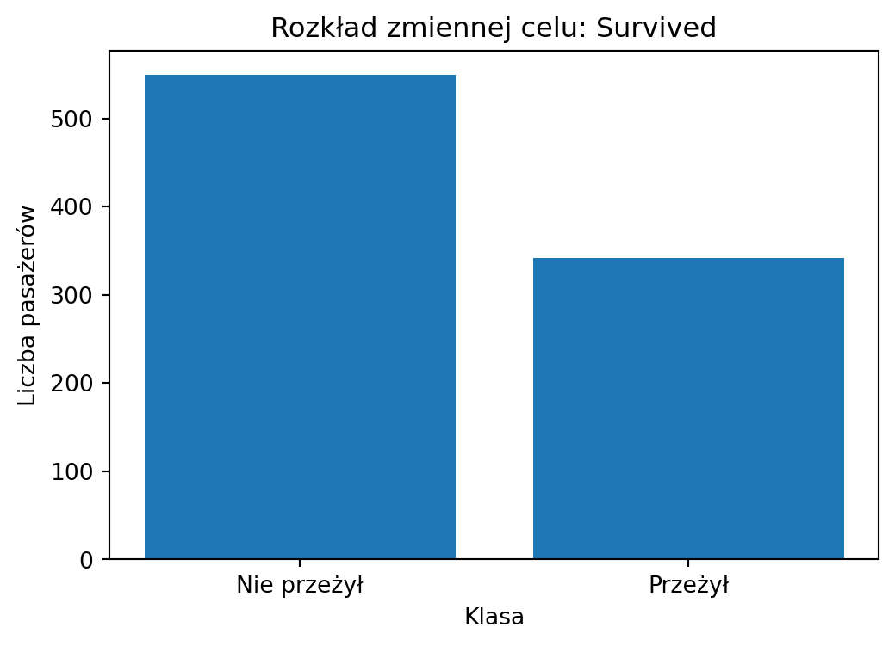
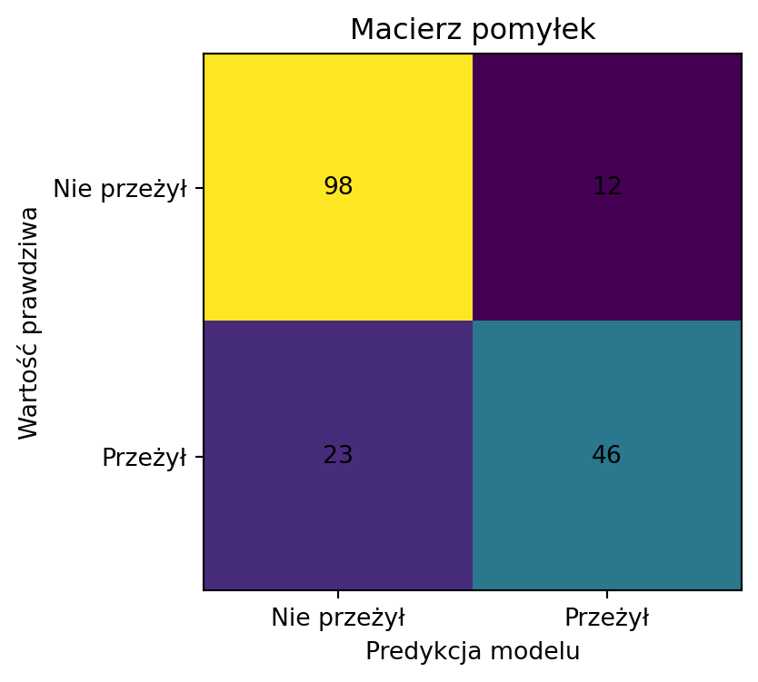
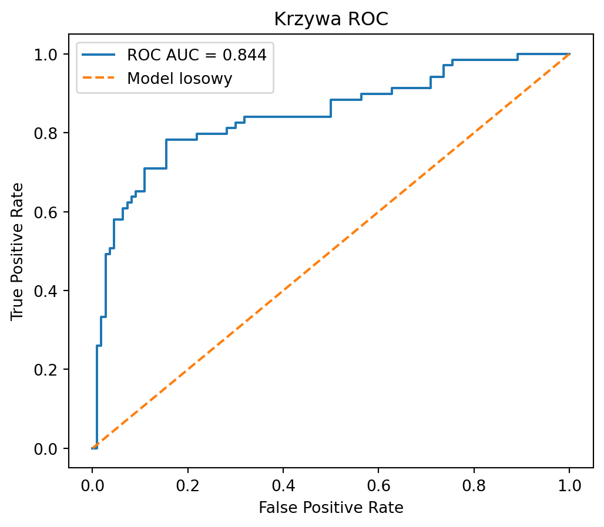
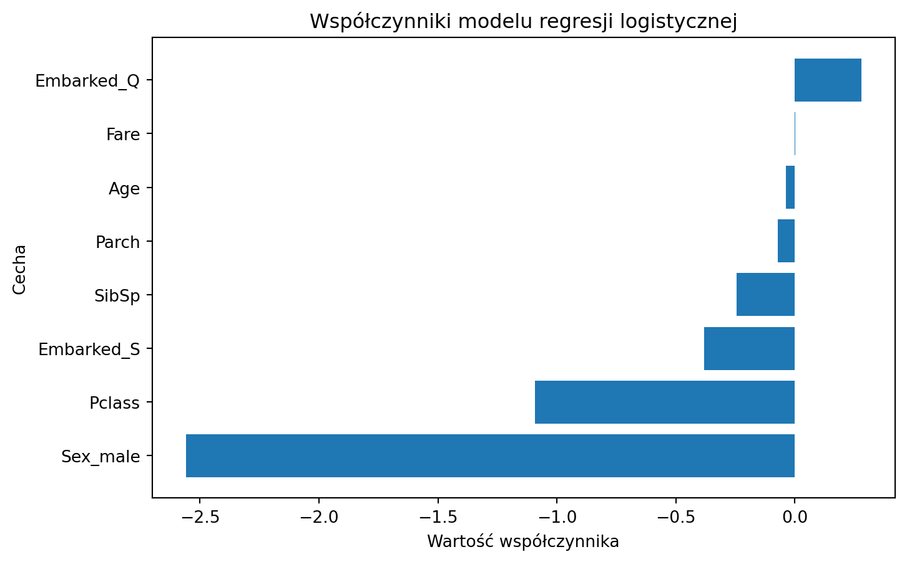

import pandas as pd
import numpy as np
import matplotlib.pyplot as plt
from sklearn.model_selection import train_test_split
from sklearn.linear_model import LogisticRegression
from sklearn.metrics import accuracy_score, precision_score, recall_score, f1_score, confusion_matrix, classification_report, roc_auc_score, roc_curve
echo = TrueRegresja logistyczna w praktyce: Titanic
Prosty projekt klasyfikacji binarnej w Pythonie
1 Cel projektu
Celem projektu jest zbudowanie prostego modelu regresji logistycznej, który przewiduje, czy pasażer Titanica przeżył katastrofę.
Projekt pokazuje pełny proces: wczytanie danych, przygotowanie cech, trenowanie modelu, ocenę jakości oraz interpretację wyników.
2 1. O czym jest ten projekt?
Regresja logistyczna jest modelem używanym do klasyfikacji binarnej, czyli do przewidywania jednej z dwóch klas.
W tym projekcie zmienną celu będzie:
Survived = 0 -> pasażer nie przeżył
Survived = 1 -> pasażer przeżył3 2. Import bibliotek
4 3. Wczytanie danych
df = pd.read_csv("data/titanic.csv")
df.head()| PassengerId | Survived | Pclass | Name | Sex | Age | SibSp | Parch | Ticket | Fare | Cabin | Embarked | |
|---|---|---|---|---|---|---|---|---|---|---|---|---|
| 0 | 1 | 0 | 3 | Braund, Mr. Owen Harris | male | 22.0 | 1 | 0 | A/5 21171 | 7.2500 | NaN | S |
| 1 | 2 | 1 | 1 | Cumings, Mrs. John Bradley (Florence Briggs Th... | female | 38.0 | 1 | 0 | PC 17599 | 71.2833 | C85 | C |
| 2 | 3 | 1 | 3 | Heikkinen, Miss. Laina | female | 26.0 | 0 | 0 | STON/O2. 3101282 | 7.9250 | NaN | S |
| 3 | 4 | 1 | 1 | Futrelle, Mrs. Jacques Heath (Lily May Peel) | female | 35.0 | 1 | 0 | 113803 | 53.1000 | C123 | S |
| 4 | 5 | 0 | 3 | Allen, Mr. William Henry | male | 35.0 | 0 | 0 | 373450 | 8.0500 | NaN | S |
Zmienna celu to:
Survived
0 = pasażer nie przeżył
1 = pasażer przeżył5 4. Podstawowe informacje o zbiorze danych
Na początku sprawdzam strukturę danych: liczbę wierszy, kolumn, typy danych oraz braki danych.
df.info()<class 'pandas.core.frame.DataFrame'>
RangeIndex: 891 entries, 0 to 890
Data columns (total 12 columns):
# Column Non-Null Count Dtype
--- ------ -------------- -----
0 PassengerId 891 non-null int64
1 Survived 891 non-null int64
2 Pclass 891 non-null int64
3 Name 891 non-null object
4 Sex 891 non-null object
5 Age 714 non-null float64
6 SibSp 891 non-null int64
7 Parch 891 non-null int64
8 Ticket 891 non-null object
9 Fare 891 non-null float64
10 Cabin 204 non-null object
11 Embarked 889 non-null object
dtypes: float64(2), int64(5), object(5)
memory usage: 83.7+ KBSprawdzam rozmiar zbioru danych.
df.shape(891, 12)Sprawdzam nazwy kolumn.
df.columnsIndex(['PassengerId', 'Survived', 'Pclass', 'Name', 'Sex', 'Age', 'SibSp',
'Parch', 'Ticket', 'Fare', 'Cabin', 'Embarked'],
dtype='object')6 5. Statystyki opisowe
Dla zmiennych liczbowych sprawdzam podstawowe statystyki opisowe.
df.describe()| PassengerId | Survived | Pclass | Age | SibSp | Parch | Fare | |
|---|---|---|---|---|---|---|---|
| count | 891.000000 | 891.000000 | 891.000000 | 714.000000 | 891.000000 | 891.000000 | 891.000000 |
| mean | 446.000000 | 0.383838 | 2.308642 | 29.699118 | 0.523008 | 0.381594 | 32.204208 |
| std | 257.353842 | 0.486592 | 0.836071 | 14.526497 | 1.102743 | 0.806057 | 49.693429 |
| min | 1.000000 | 0.000000 | 1.000000 | 0.420000 | 0.000000 | 0.000000 | 0.000000 |
| 25% | 223.500000 | 0.000000 | 2.000000 | 20.125000 | 0.000000 | 0.000000 | 7.910400 |
| 50% | 446.000000 | 0.000000 | 3.000000 | 28.000000 | 0.000000 | 0.000000 | 14.454200 |
| 75% | 668.500000 | 1.000000 | 3.000000 | 38.000000 | 1.000000 | 0.000000 | 31.000000 |
| max | 891.000000 | 1.000000 | 3.000000 | 80.000000 | 8.000000 | 6.000000 | 512.329200 |
7 6. Braki danych
Sprawdzam liczbę braków danych w każdej kolumnie.
df.isna().sum()PassengerId 0
Survived 0
Pclass 0
Name 0
Sex 0
Age 177
SibSp 0
Parch 0
Ticket 0
Fare 0
Cabin 687
Embarked 2
dtype: int64Sprawdzam procent braków danych.
missing_percent = df.isna().mean() * 100
missing_percent.sort_values(ascending=False)Cabin 77.104377
Age 19.865320
Embarked 0.224467
PassengerId 0.000000
Name 0.000000
Pclass 0.000000
Survived 0.000000
Sex 0.000000
Parch 0.000000
SibSp 0.000000
Fare 0.000000
Ticket 0.000000
dtype: float64W danych Titanic szczególnie problematyczna jest kolumna Cabin, ponieważ ma bardzo dużo braków danych.
W prostym modelu nie będę jej używać, ponieważ wymagałaby dodatkowego przetwarzania.
8 7. Rozkład zmiennej celu
Sprawdzam, ilu pasażerów przeżyło, a ilu nie przeżyło.
df["Survived"].value_counts()Survived
0 549
1 342
Name: count, dtype: int64Sprawdzam proporcje klas.
df["Survived"].value_counts(normalize=True) * 100Survived
0 61.616162
1 38.383838
Name: proportion, dtype: float64survival_counts = df["Survived"].value_counts()
plt.figure(figsize=(6, 4))
plt.bar(["Nie przeżył", "Przeżył"], survival_counts.values)
plt.title("Rozkład zmiennej celu: Survived")
plt.xlabel("Klasa")
plt.ylabel("Liczba pasażerów")
plt.show()
9 8. Wybór kolumn do pierwszego modelu
Do pierwszej wersji modelu wybieram tylko kilka prostych i zrozumiałych cech.
columns = [
"Survived",
"Pclass",
"Sex",
"Age",
"SibSp",
"Parch",
"Fare",
"Embarked"
]
df_model = df[columns].copy()
df_model.head()| Survived | Pclass | Sex | Age | SibSp | Parch | Fare | Embarked | |
|---|---|---|---|---|---|---|---|---|
| 0 | 0 | 3 | male | 22.0 | 1 | 0 | 7.2500 | S |
| 1 | 1 | 1 | female | 38.0 | 1 | 0 | 71.2833 | C |
| 2 | 1 | 3 | female | 26.0 | 0 | 0 | 7.9250 | S |
| 3 | 1 | 1 | female | 35.0 | 1 | 0 | 53.1000 | S |
| 4 | 0 | 3 | male | 35.0 | 0 | 0 | 8.0500 | S |
Wybrane cechy:
| Kolumna | Znaczenie |
|---|---|
Pclass |
klasa biletu |
Sex |
płeć pasażera |
Age |
wiek pasażera |
SibSp |
liczba rodzeństwa/małżonka na pokładzie |
Parch |
liczba rodziców/dzieci na pokładzie |
Fare |
cena biletu |
Embarked |
port wejścia na pokład |
Survived |
zmienna celu |
10 9. Czyszczenie danych wybranych do modelu
Po wybraniu kolumn do modelu sprawdzam, czy w tych danych występują braki.
df_model.isna().sum()Survived 0
Pclass 0
Sex 0
Age 177
SibSp 0
Parch 0
Fare 0
Embarked 2
dtype: int64W kolumnie Age występują braki danych.
Uzupełniam je medianą, ponieważ mediana jest bardziej odporna na wartości odstające niż średnia.
age_median = df_model["Age"].median()
age_mediannp.float64(28.0)df_model["Age"] = df_model["Age"].fillna(age_median)W kolumnie Embarked braki uzupełniam dominantą, czyli najczęściej występującą wartością.
embarked_mode = df_model["Embarked"].mode()[0]
embarked_mode'S'df_model["Embarked"] = df_model["Embarked"].fillna(embarked_mode)Po imputacji ponownie sprawdzam braki danych.
df_model.isna().sum()Survived 0
Pclass 0
Sex 0
Age 0
SibSp 0
Parch 0
Fare 0
Embarked 0
dtype: int64W tym projekcie stosuję proste metody imputacji, ponieważ celem jest zbudowanie czytelnego pierwszego modelu regresji logistycznej. W bardziej zaawansowanym projekcie można byłoby użyć imputacji w pipeline ze scikit-learn.
11 10. Kodowanie zmiennych kategorycznych
Regresja logistyczna w scikit-learn wymaga danych liczbowych.
Dlatego zmienne tekstowe muszą zostać zakodowane.
W tym projekcie koduję zmienne:
Sex,Embarked.
Używam one-hot encodingu.
df_model_encoded = pd.get_dummies(
df_model,
columns=["Sex", "Embarked"],
drop_first=True
)
df_model_encoded.head()| Survived | Pclass | Age | SibSp | Parch | Fare | Sex_male | Embarked_Q | Embarked_S | |
|---|---|---|---|---|---|---|---|---|---|
| 0 | 0 | 3 | 22.0 | 1 | 0 | 7.2500 | True | False | True |
| 1 | 1 | 1 | 38.0 | 1 | 0 | 71.2833 | False | False | False |
| 2 | 1 | 3 | 26.0 | 0 | 0 | 7.9250 | False | False | True |
| 3 | 1 | 1 | 35.0 | 1 | 0 | 53.1000 | False | False | True |
| 4 | 0 | 3 | 35.0 | 0 | 0 | 8.0500 | True | False | True |
Sprawdzam typy danych po kodowaniu.
df_model_encoded.dtypesSurvived int64
Pclass int64
Age float64
SibSp int64
Parch int64
Fare float64
Sex_male bool
Embarked_Q bool
Embarked_S bool
dtype: objectParametr drop_first=True usuwa pierwszą kategorię po one-hot encodingu.
Dzięki temu unikamy tworzenia nadmiarowych kolumn, które niosłyby tę samą informację.
12 11. Podział danych na cechy i zmienną celu
Zmienna Survived jest zmienną celu, czyli tym, co model ma przewidywać.
X = df_model_encoded.drop(columns="Survived")
y = df_model_encoded["Survived"]Podgląd cech wejściowych:
X.head()| Pclass | Age | SibSp | Parch | Fare | Sex_male | Embarked_Q | Embarked_S | |
|---|---|---|---|---|---|---|---|---|
| 0 | 3 | 22.0 | 1 | 0 | 7.2500 | True | False | True |
| 1 | 1 | 38.0 | 1 | 0 | 71.2833 | False | False | False |
| 2 | 3 | 26.0 | 0 | 0 | 7.9250 | False | False | True |
| 3 | 1 | 35.0 | 1 | 0 | 53.1000 | False | False | True |
| 4 | 3 | 35.0 | 0 | 0 | 8.0500 | True | False | True |
Podgląd zmiennej celu:
y.head()0 0
1 1
2 1
3 1
4 0
Name: Survived, dtype: int6413 12. Podział na zbiór treningowy i testowy
Dane dzielę na zbiór treningowy i testowy.
Zbiór treningowy służy do uczenia modelu.
Zbiór testowy służy do sprawdzenia, jak model działa na nowych danych.
X_train, X_test, y_train, y_test = train_test_split(
X,
y,
test_size=0.2,
random_state=42,
stratify=y
)Sprawdzam rozmiary zbiorów.
X_train.shape, X_test.shape((712, 8), (179, 8))Sprawdzam, czy proporcje klas są podobne w zbiorze treningowym i testowym.
y_train.value_counts(normalize=True) * 100Survived
0 61.657303
1 38.342697
Name: proportion, dtype: float64y_test.value_counts(normalize=True) * 100Survived
0 61.452514
1 38.547486
Name: proportion, dtype: float64Parametr stratify=y sprawia, że proporcje klas zmiennej celu są podobne w zbiorze treningowym i testowym.
To ważne szczególnie wtedy, gdy klasy nie są idealnie zbalansowane.
14 13. Trenowanie modelu regresji logistycznej
Tworzę model regresji logistycznej.
model = LogisticRegression(max_iter=1000)Trenuję model na zbiorze treningowym.
model.fit(X_train, y_train)LogisticRegression(max_iter=1000)In a Jupyter environment, please rerun this cell to show the HTML representation or trust the notebook.
On GitHub, the HTML representation is unable to render, please try loading this page with nbviewer.org.
Parameters
Metoda fit() oznacza uczenie modelu.
Model szuka zależności między cechami pasażera a tym, czy pasażer przeżył katastrofę.
15 14. Predykcja na zbiorze testowym
Po wytrenowaniu modelu wykonuję predykcję na zbiorze testowym.
y_pred = model.predict(X_test)Pierwsze przewidywania modelu:
y_pred[:10]array([0, 0, 0, 0, 1, 0, 1, 0, 0, 0])Regresja logistyczna może także zwracać prawdopodobieństwa klas.
y_proba = model.predict_proba(X_test)
y_proba[:5]array([[0.93000754, 0.06999246],
[0.95065264, 0.04934736],
[0.84251692, 0.15748308],
[0.96320496, 0.03679504],
[0.3309634 , 0.6690366 ]])Druga kolumna oznacza prawdopodobieństwo klasy 1, czyli przeżycia.
survival_probability = y_proba[:, 1]
survival_probability[:10]array([0.06999246, 0.04934736, 0.15748308, 0.03679504, 0.6690366 ,
0.43514154, 0.74382998, 0.32786299, 0.35035195, 0.1636116 ])16 15. Ocena jakości modelu
Do oceny modelu klasyfikacyjnego używam kilku metryk:
- accuracy,
- precision,
- recall,
- F1-score.
accuracy = accuracy_score(y_test, y_pred)
precision = precision_score(y_test, y_pred)
recall = recall_score(y_test, y_pred)
f1 = f1_score(y_test, y_pred)
metrics = pd.DataFrame({
"Metryka": ["Accuracy", "Precision", "Recall", "F1-score"],
"Wynik": [accuracy, precision, recall, f1]
})
metrics| Metryka | Wynik | |
|---|---|---|
| 0 | Accuracy | 0.804469 |
| 1 | Precision | 0.793103 |
| 2 | Recall | 0.666667 |
| 3 | F1-score | 0.724409 |
Interpretacja metryk:
| Metryka | Znaczenie |
|---|---|
| Accuracy | Jaki procent wszystkich predykcji był poprawny |
| Precision | Ile osób przewidzianych jako „przeżył” naprawdę przeżyło |
| Recall | Ilu pasażerów, którzy naprawdę przeżyli, model wykrył |
| F1-score | Łączy precision i recall w jedną metrykę |
W klasyfikacji nie warto patrzeć tylko na accuracy.
Przy niezbalansowanych klasach accuracy może wyglądać dobrze, mimo że model słabo wykrywa jedną z klas.
17 16. Macierz pomyłek
Macierz pomyłek pokazuje, ile przypadków model sklasyfikował poprawnie i błędnie.
cm = confusion_matrix(y_test, y_pred)
cmarray([[98, 12],
[23, 46]])fig, ax = plt.subplots(figsize=(5, 4))
ax.imshow(cm)
ax.set_title("Macierz pomyłek")
ax.set_xlabel("Predykcja modelu")
ax.set_ylabel("Wartość prawdziwa")
ax.set_xticks([0, 1])
ax.set_yticks([0, 1])
ax.set_xticklabels(["Nie przeżył", "Przeżył"])
ax.set_yticklabels(["Nie przeżył", "Przeżył"])
for i in range(2):
for j in range(2):
ax.text(j, i, cm[i, j], ha="center", va="center")
plt.show()
W macierzy pomyłek:
- lewy górny róg oznacza osoby, które nie przeżyły i model poprawnie przewidział, że nie przeżyły,
- prawy dolny róg oznacza osoby, które przeżyły i model poprawnie przewidział, że przeżyły,
- pozostałe pola oznaczają błędy modelu.
18 17. Raport klasyfikacji
print(classification_report(y_test, y_pred)) precision recall f1-score support
0 0.81 0.89 0.85 110
1 0.79 0.67 0.72 69
accuracy 0.80 179
macro avg 0.80 0.78 0.79 179
weighted avg 0.80 0.80 0.80 179
Raport klasyfikacji pokazuje metryki osobno dla każdej klasy.
19 18. ROC AUC i krzywa ROC
Oprócz podstawowych metryk klasyfikacji sprawdzam także metrykę ROC AUC.
ROC AUC pokazuje, jak dobrze model rozróżnia klasy 0 i 1.
Im bliżej wartości 1, tym lepiej. Wynik około 0.5 oznacza model zbliżony do losowego zgadywania.
roc_auc = roc_auc_score(y_test, survival_probability)
roc_auc0.8442687747035573fpr, tpr, thresholds = roc_curve(y_test, survival_probability)
plt.figure(figsize=(6, 5))
plt.plot(fpr, tpr, label=f"ROC AUC = {roc_auc:.3f}")
plt.plot([0, 1], [0, 1], linestyle="--", label="Model losowy")
plt.title("Krzywa ROC")
plt.xlabel("False Positive Rate")
plt.ylabel("True Positive Rate")
plt.legend()
plt.show()
ROC AUC mierzy zdolność modelu do odróżniania pasażerów, którzy przeżyli, od tych, którzy nie przeżyli.
W tym projekcie ROC AUC jest dobrym uzupełnieniem accuracy, precision, recall i F1-score.
20 19. Interpretacja współczynników modelu
Regresja logistyczna pozwala sprawdzić, które cechy zwiększają lub zmniejszają prawdopodobieństwo klasy 1, czyli przeżycia.
coefficients = pd.DataFrame({
"Cecha": X.columns,
"Współczynnik": model.coef_[0]
}).sort_values(by="Współczynnik", ascending=False)
coefficients| Cecha | Współczynnik | |
|---|---|---|
| 6 | Embarked_Q | 0.278980 |
| 4 | Fare | 0.002239 |
| 1 | Age | -0.038566 |
| 3 | Parch | -0.071126 |
| 2 | SibSp | -0.244502 |
| 7 | Embarked_S | -0.381482 |
| 0 | Pclass | -1.092223 |
| 5 | Sex_male | -2.559300 |
Dodatni współczynnik oznacza, że dana cecha zwiększa szansę przypisania pasażera do klasy 1.
Ujemny współczynnik oznacza, że dana cecha zmniejsza szansę przypisania pasażera do klasy 1.
plt.figure(figsize=(8, 5))
plt.barh(coefficients["Cecha"], coefficients["Współczynnik"])
plt.title("Współczynniki modelu regresji logistycznej")
plt.xlabel("Wartość współczynnika")
plt.ylabel("Cecha")
plt.gca().invert_yaxis()
plt.show()
Współczynniki regresji logistycznej nie są bezpośrednio procentami.
Pokazują wpływ cech na logarytm szansy przynależności do klasy 1.
21 20. Wnioski końcowe
W projekcie zbudowano prosty model regresji logistycznej przewidujący przeżycie pasażera Titanica.
Najważniejsze wnioski:
- Regresja logistyczna nadaje się do problemów klasyfikacji binarnej.
- Dane przed modelowaniem muszą zostać oczyszczone i zakodowane.
- Braki w wieku uzupełniono medianą, a braki w porcie wejścia dominantą.
- Zmienną
SexorazEmbarkedzakodowano metodą one-hot encoding. - Model oceniono za pomocą accuracy, precision, recall i F1-score.
- Sama wartość accuracy nie wystarcza do pełnej oceny klasyfikatora.
- Interpretacja współczynników pozwala sprawdzić, które cechy wpływają na predykcję modelu.
22 21. Możliwe dalsze kroki
Projekt można rozbudować o:
- użycie
PipelineiColumnTransformer, - skalowanie zmiennych numerycznych,
- walidację krzyżową,
- wykres ROC i metrykę ROC AUC,
- porównanie regresji logistycznej z drzewem decyzyjnym,
- dokładniejszą analizę braków danych,
- lepsze wykorzystanie kolumny
Cabin, - stworzenie aplikacji Streamlit do przewidywania przeżycia pasażera.